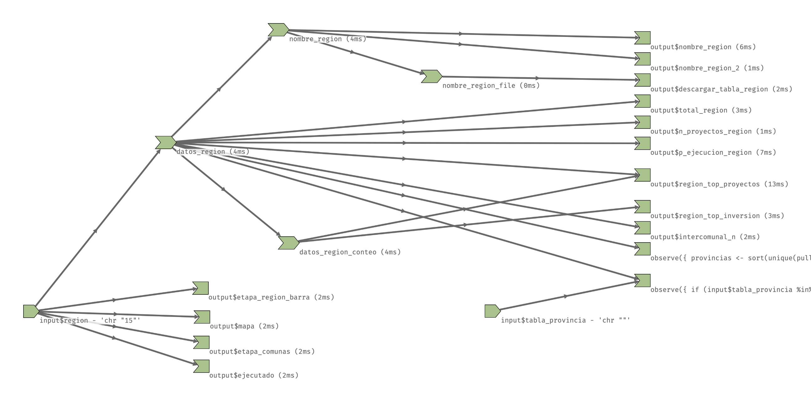

Analiza el funcionamiento de tus aplicaciones Shiny con {reactlog}
14/11/2025
Las aplicaciones Shiny funcionan con reactividad: una cadena de causalidad que va desde los inputs de tu app, pasando por las expresiones reactivas (objetos de R que se actualizan automáticamente cuando cambian sus dependencias), hasta los outputs que se muestran en la interfaz de usuario.

Cuando programamos una app Shiny vamos haciendo éste tipo de conexiones:
estos dos inputs van a hacer que en este
reactive()se filtren los datos, y el resultado delreactive()va a usarse para generar un output en forma de gráfico.
Con {reactlog} puedes explorar visualmente esta cadena o red de dependencias, para entender cómo tu aplicación se va generando, analizar las dependencias entre elementos, y buscar posibles optimizaciones.
Para activar {reactlog}, antes de ejecutar tu app, ejecuta lo siguiente:
reactlog::reactlog_enable()
Luego ejecuta tu aplicación normalmente, o simplemente déjala cargarse, y tienes dos opciones:
- Presiona
Ctrl + F3(oCmd + F3en Mac) mientras la aplicación se ejecuta para abrir la visualización de reactlog en una nueva ventana. - Después de cerrar la aplicación, ejecuta
reactlog::reactlog_show()para abrir la visualización.
Aparecerá un diagrama de nodos y conexiones que representan los distintos elementos de tu aplicación y sus relaciones entre sí.
En esta visualización vemos al lado izquierdo los inputs, que usualmente son el principio de la cadena de reactividad. Estos inputs se conectan a las expresiones reactivas que usan sus valores, y éstas a su vez se conectan con otras expresiones reactivas, o con outputs, que salen al lado derecho.
Recordemos que, en Shiny, la reactividad va desde el final hacia el principio: todo parte porque existen outputs que requieren los resultados de elementos reactivos (datos, cálculos), las cuales a su vez dependen de otros inputs, etc., y así se van evaluando todas las operaciones hasta que la app queda cargada (idle).
Puedes hacer clic en los nodos para ver detalles adicionales, como el tiempo que tomó cada operación, las dependencias, y más.

Puedes hacer doble clic en los nodos para que el gráfico se reordene y muestre las dependencias directas.

En la parte superior, puedes avanzar o retroceder para ir viendo el estado de tu aplicación en distintos momentos de su ejecución; por ejemplo, empezar desde el inicio e ir viendo cómo los outputs van llamando a sus dependencias hasta que la app se carga completa.
En este video vemos el funcionamiento interno de una aplicación compleja, y arriba vemos que todo pasó en menos de 2 segundos.